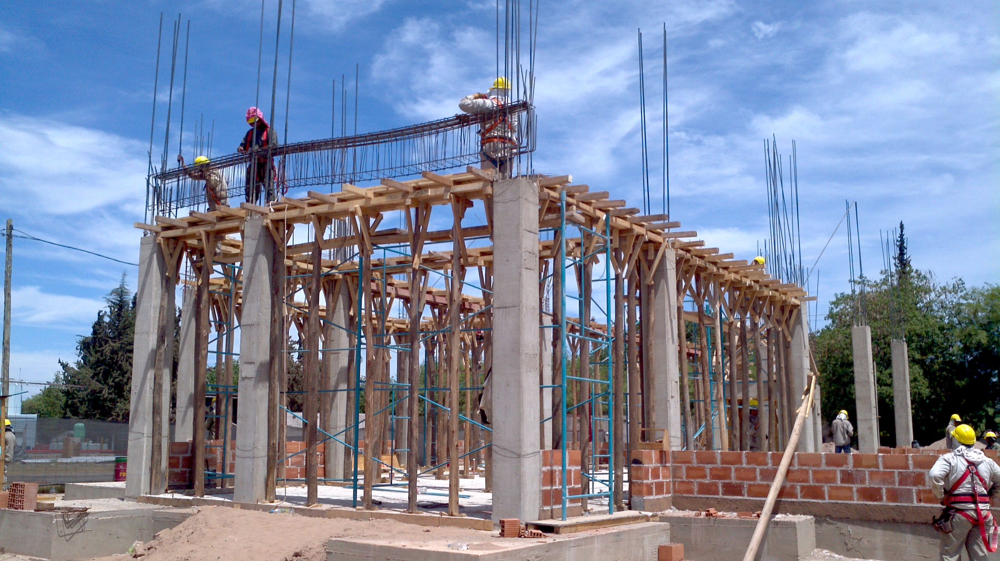
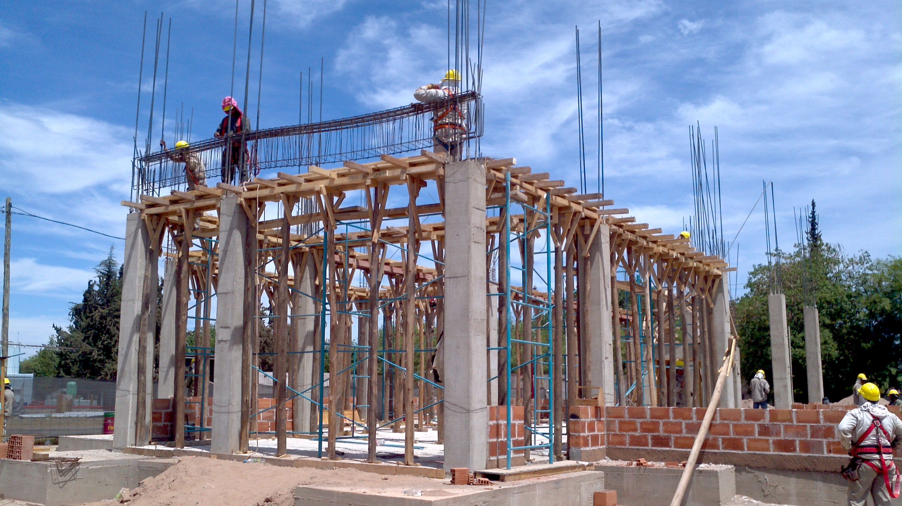

Equações Diferenciais Ordinárias (EDO) possuem uma ou várias derivadas da função incógnita que dependem de apenas uma variável. Já no caso das Equações Diferenciais Parciais (EDP) a função incógnita que depende de mais de uma variável. De acordo com Boyce (2015) as EDPs foram estudadas por Euler, Daniel Bernoulli e Lagrange, e podem ser utilizadas para descrever fenômenos como a propagação de ondas (Equação da Curva Elástica ou Equação da Onda), a propagação de calor (Equação do Calor).
 
Ao fazer o monitoramento e estudo do comportamento dos elementos de uma viga, observa-se uma quantidade muito alta de aplicações de equações diferenciais e um incentivo a continuar neste campo de pesquisa, esclarecendo assim a infinidade de aplicações que a matemática disponibiliza para explicar fenômenos naturais e reais na engenharia civil.

Ao fazer o monitoramento e estudo do comportamento dos elementos de uma viga, observa-se uma quantidade muito alta de aplicações de equações diferenciais e um incentivo a continuar neste campo de pesquisa, esclarecendo assim a infinidade de aplicações que a matemática disponibiliza para explicar fenômenos naturais e reais na engenharia civil.